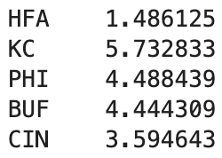

Market Power Ratings#
If you want to jump straight to the computation, without seeing the explanations and background in this notebook, go directly to the Power Ratings notebook.
I first heard about making this computation (in Excel) from the Deep Dive podcast, Episode 345, with Andy Molitor and Drew Dinsick. Here is a short nine second clip from that episode. In the actual episode, they discuss this starting around 23:30 for about fifteen minutes. The full video is at https://fb.watch/68iADIi-2K/
Introduction#
How can we compute “Market Power Ratings” like the following using Python? (“HFA” stands for home-field advantage. Our computation will estimate this value along the values for the 32 teams.)

What do these numbers mean? For example, when Buffalo plays at Philadelphia, our numbers suggest that the spread should be about 1.5. (The many 0s displayed below is realted to numerical precision issues/rounding errors. They don’t have any deeper meaning.)
4.488 - 4.444 + 1.486
1.5300000000000005
The actual look-ahead spread for that game (as of our data source on August 10th 2023) is 2.5. Similarly, the actual spread for Buffalo at Kansas City is 3.5, while our power ratings suggest it should be about 2.8, and the actual value is 3.5.
5.733 - 4.444 + 1.486
2.7749999999999995
It might seem like the predicted spreads using the power ratings are always a little too low, but for example with Cincinnati at Kansas City, the predicted spread is higher than the current line of 3.
5.733 - 3.595 + 1.486
3.6239999999999997
It’s easy to go from power ratings to spreads, like what we did in the three examples above. The goal of these notebooks is to show how to go in the opposite direction, from spreads to power ratings. We call these “market power ratings”, because they are derived from the currently available spreads.
Let me show a little more explicitly what these equations look like. First I’m going to import a dataset containing look ahead spreads for all 272 games of the season. See the Getting point spreads notebook to see how this dataset was made. (Most of the work was done by nflverse on GitHub.)
When working with spreadsheet-style data in Python, we will almost always be using the pandas library.
import pandas as pd
Here we import the current point-spread data (as of August 10th 2023).
df = pd.read_csv("data/spreads-2023-08-10.csv")
Here are the first four rows of df. (It is conventional to use df as the variable name, because this is a pandas DataFrame object.)
df.head(4)
| home_team | away_team | spread_line | neutral | |
|---|---|---|---|---|
| 0 | KC | DET | 6.5 | False |
| 1 | ATL | CAR | 3.0 | False |
| 2 | BAL | HOU | 9.5 | False |
| 3 | CLE | CIN | -1.0 | False |
In total, there are 272 rows in this DataFrame (one for each regular season game).
df.shape
(272, 4)
Eventually we want to solve a system of 272 equations in 33 variables (one equation for each game, one variable for each team, and one additional variable for home-field advantage). $\( 272\text{ equations: }\left\{\begin{aligned} \text{\{Kansas City PR\}} - \text{\{Detroit PR\}} + \text{HFA} &= 6.5\\ \text{\{Atlanta PR\}} - \text{\{Carolina PR\}} + \text{HFA} &= 3\\ \text{\{Baltimore PR\}} - \text{\{Houston PR\}} + \text{HFA} &= 9.5\\ \text{\{Cleveland PR\}} - \text{\{Cincinnati PR\}} + \text{HFA} &= -1\\ &\cdots \end{aligned}\right. \)$
Solving this system exactly is impossible (that’s why none of our sample equations above fit the data perfectly). Instead, we use linear regression to find what values come the closest to solving it. Closest in this context means we look at the errors between our predicted spreads (like 1.5, 2.8, 3.6 above) and the actual spreads (like 2.5, 3.5, 3 above). In this case, these errors are -1, -0.7, 0.6. When we say we want the values that come “closest” to solving the 272 equations, we mean we want the average of the squares of the errors to be as small as possible. (That’s why this is sometimes also called “least squares regression”. Another very reasonable choice is to demand that the average of the absolute values of the errors be as small as possible. Demanding that the average of the errors be as small as possible is not a reasonable choice, because then positive and negative errors will “cancel out”, which we don’t want.)
import pandas as pd
df = pd.read_csv("data/spreads-2023-08-10.csv")
df.head()
| home_team | away_team | spread_line | neutral | |
|---|---|---|---|---|
| 0 | KC | DET | 6.5 | False |
| 1 | ATL | CAR | 3.0 | False |
| 2 | BAL | HOU | 9.5 | False |
| 3 | CLE | CIN | -1.0 | False |
| 4 | IND | JAX | -3.5 | False |
Example system#
Let’s focus on just the following three teams, Kansas City, Las Vegas, and Miami. Part of the reason we’ve chosen these three teams is because Kansas City will play against Miami in Frankfurt, Germany, which is one of the five games on the schedule which is being played on a neutral field.
teams = ["KC", "LV", "MIA"]
If this is your first time seeing pandas, don’t worry about understanding the following syntax. Here we are finding the rows from df for which both teams are in our length-3 list teams.
df3 = df[df[["home_team", "away_team"]].isin(teams).all(axis=1)]
Here are the four games being played among those three teams. (The numbers on the left, 123, 157, etc, are called the index of the DataFrame. They are left over from the original DataFrame df.)
df3
| home_team | away_team | spread_line | neutral | |
|---|---|---|---|---|
| 123 | KC | MIA | 4.0 | True |
| 157 | MIA | LV | 5.5 | False |
| 176 | LV | KC | -5.0 | False |
| 237 | KC | LV | 8.5 | False |
Think of KC, MIA, LV, and HFA (home-field advantage) as being four variables. The above four rows correspond to the following four equations.
Notice that there is no perfect solution to these equations. For example, if we subtract the second equation from the fourth equation, we get \(KC - MIA = 8.5 - 5.5 = 3\), which is incompatible with the first equation.
If you’ve taken a course in linear algebra, we’re saying that the following augmented matrix corresponds to an inconsistent system of equations.
Be sure you see how the first four columns of that matrix (the part to the left of the vertical line) correspond to our equations above. We won’t be using any linear algebra, but we will need to be able to create those coefficient columns of 1s, -1s, and 0s, using Python.
Creating the coefficient matrix#
We continue to work with the 4-by-4 DataFrame df3 from above.
df3
| home_team | away_team | spread_line | neutral | |
|---|---|---|---|---|
| 123 | KC | MIA | 4.0 | True |
| 157 | MIA | LV | 5.5 | False |
| 176 | LV | KC | -5.0 | False |
| 237 | KC | LV | 8.5 | False |
We will first see how to turn df3 into the following matrix, where we think of the three columns as corresponding to KC, LV, and MIA, respectively (we’ll bring back the HFA column and the spreads later).
We’ll first see how to get the 1s portion of this 4-by-3 matrix. This is such a common procedure that pandas has its own function to do this for us. (The Machine Learning library scikit-learn has something similar, the OneHotEncoder class.)
pd.get_dummies(df3["home_team"])
| KC | LV | MIA | |
|---|---|---|---|
| 123 | True | False | False |
| 157 | False | False | True |
| 176 | False | True | False |
| 237 | True | False | False |
This is esssentially already perfect if we view True as corresponding to 1 and False as corresponding to 0 (as Python does), but we can also make it explicit by specifying that we want the resulting data type to be integers.
pd.get_dummies(df3["home_team"], dtype=int)
| KC | LV | MIA | |
|---|---|---|---|
| 123 | 1 | 0 | 0 |
| 157 | 0 | 0 | 1 |
| 176 | 0 | 1 | 0 |
| 237 | 1 | 0 | 0 |
We can use the same procedure to get the -1 entries… we just need to use the “away_team” column and then to negate all the entries.
-pd.get_dummies(df3["away_team"], dtype=int)
| KC | LV | MIA | |
|---|---|---|---|
| 123 | 0 | 0 | -1 |
| 157 | 0 | -1 | 0 |
| 176 | -1 | 0 | 0 |
| 237 | 0 | -1 | 0 |
Here then is the 4-by-3 matrix we were trying to construct. (I’ll call it coefs_pre instead of coefs because it doesn’t yet include the home-field advantage coefficients.)
coefs_pre = pd.get_dummies(df3["home_team"], dtype=int) - pd.get_dummies(df3["away_team"], dtype=int)
coefs_pre
| KC | LV | MIA | |
|---|---|---|---|
| 123 | 1 | 0 | -1 |
| 157 | 0 | -1 | 1 |
| 176 | -1 | 1 | 0 |
| 237 | 1 | -1 | 0 |
Now let’s add in the “HFA” column. Most of these entries will be 1, because most games are not being played at a neutral stadium, but for our DataFrame df3, the top entry should be 0.
Here is the column of df3 containing the relevant information.
df3["neutral"]
123 True
157 False
176 False
237 False
Name: neutral, dtype: bool
Again, we can view these as integers instead of as Boolean values True and False.
df3["neutral"].astype(int)
123 1
157 0
176 0
237 0
Name: neutral, dtype: int64
That is essentially the reverse of what we want. I think the most natural way to get the values we want is to negate the “neutral” column:
~df3["neutral"]
123 False
157 True
176 True
237 True
Name: neutral, dtype: bool
And then to convert to integers.
(~df3["neutral"]).astype(int)
123 0
157 1
176 1
237 1
Name: neutral, dtype: int64
Let’s add this as a new “HFA” column to our coefficient matrix.
coefs_pre["HFA"] = (~df3["neutral"]).astype(int)
coefs_pre
| KC | LV | MIA | HFA | |
|---|---|---|---|---|
| 123 | 1 | 0 | -1 | 0 |
| 157 | 0 | -1 | 1 | 1 |
| 176 | -1 | 1 | 0 | 1 |
| 237 | 1 | -1 | 0 | 1 |
This is the matrix we wanted to produce all along, so we will assign it to the variable coefs. (We’ll also call the copy method just to make a new version of the DataFrame. Don’t worry about this, I don’t think it is relevant here.)
coefs = coefs_pre.copy()
coefs
| KC | LV | MIA | HFA | |
|---|---|---|---|---|
| 123 | 1 | 0 | -1 | 0 |
| 157 | 0 | -1 | 1 | 1 |
| 176 | -1 | 1 | 0 | 1 |
| 237 | 1 | -1 | 0 | 1 |
Performing linear regression#
This section will be much easier in terms of Python code than the previous section, even though the math that occurs in the background is much more sophisticated. (Essentially the previous section was just book-keeping.)
Here we will use linear regression (also called “least squares regression”) to find the “best” values for “KC”, “LV”, “MIA”, and “HFA”. (Remember that we saw above that no solution would solve these four equations perfectly.) In the Power Ratings notebook, we will use all 272 games, rather than just the four games among these three teams.
Caution. If you try to do this same thing in R instead of in Python, it will complain because the “best” solution is not uniquely determined. (Think about it: if you add 3 to every team’s power rating, the projected spreads remain unchanged.) One way to get around this would be to remove one of the team columns from the coefs DataFrame. This has the effect of forcing that team’s power rating to be 0. That is probably also a good thing to do here in Python, but we’re not bothering with that now.
from sklearn.linear_model import LinearRegression
Here we create a LinearRegression object and assign it to the variable name reg. (This is an example of where Python follows Object Oriented Programming conventions. This object reg will perform the linear regression, and will store the results.) Typically in linear regression, in addition to values being found for the columns, there is also a constant term found (like the \(b\) value in the equation of a line, \(y = mx + b\)). We don’t want to allow that in this case, so we specify fit_intercept=False.
reg = LinearRegression(fit_intercept=False)
Here we fit the LinearRegression object reg to the data. Recall that coefs does not include any of the spread numbers. The four columns of coefs correspond to our four input variables (called “features” or “predictors”). Our desired output is df3["spread_line"] (called the “target”).
reg.fit(coefs, df3["spread_line"])
LinearRegression(fit_intercept=False)In a Jupyter environment, please rerun this cell to show the HTML representation or trust the notebook.
On GitHub, the HTML representation is unable to render, please try loading this page with nbviewer.org.
LinearRegression(fit_intercept=False)
At this point, it’s not clear that anything happened, but as a result of the above call of fit, the object reg now has a variable coef_ attached to it, which contains the corresponding “best” values.
reg.coef_
array([ 3.52777778, -3.38888889, -0.13888889, 1.91666667])
Do you see what these four numbers represent? They are the chosen values corresponding to the following four variables (in the same order).
reg.feature_names_in_
array(['KC', 'LV', 'MIA', 'HFA'], dtype=object)
Of course we’d probably say that the Kansas City power rating of 3.53 is too low, but maybe the numbers look more realistic if we add say 1.5 to the “KC”, “LV”, and “MIA” values. (As mentioned above, the computed “best” values are not unique.) And anyway, I think these four values are pretty accurate, considering that we only used 4 out of 272 spreads to compute them. In the Power Ratings notebook, we will use all 272 games, and the resulting values will look more accurate.